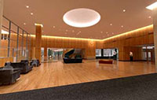
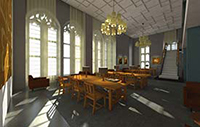
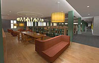
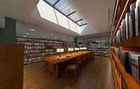
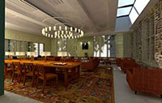
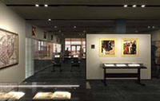

The Vision

Creating the vision for the Firestone Library Renovation Project has been a cumulative process involving extensive planning and research. This renovation will not only provide modern building systems and infrastructure, but it will also highlight and capture the unique character of the original 1948 building design. Through this renovation, Firestone’s architectural history will be gracefully combined with the needs of today’s scholars. In the words of the project’s Architect of Record, Carole Wedge, “Firestone’s central vision for scholarship remains a constant in a setting that reinforces its strong sense of place.”
Celebrating Our History
In 1948, an issue of Princeton Alumni Weekly showcased the newly constructed Harvey S. Firestone Memorial Library. The article featured photographs, interviews and historical facts about the opening of the library, telling “the story of the new library and how it came to be.” Within the article, the University Librarian described the essence of what makes the library a successful study environment:
The outstanding characteristic of Princeton’s Firestone
Library is its openness, its ease of access to books and to
the library services….It is a building dedicated to the
dignity and value of knowledge and of wisdom. It exists for
these purposes alone. If the architectural ornaments are
beautiful or if the technical paraphernalia of librarianship
intrude themselves upon you, remember that they are present
incidentally or through necessity. Their purpose is to house
books and to make them conveniently accessible for your study
and for the enlargement of the horizons of your mind. This, in
effect, is what the new Princeton Library seeks to proclaim to
every student who enters it.
—Julian P. Boyd, University Librarian
This is the legacy on which the renovation will build.
Embracing Our Future
Among the most important goals of the renovation project are improving reader and study spaces, upgrading Rare Books & Special Collections areas, introducing sustainable building features, updating life-safety systems, and renovating graduate study rooms, exhibit spaces, and shelving areas in the library.
This renovation work is being done so that, in the words of former President Harold W. Dodds, the miracle contained within this library can continue—“the miracle of imagination kindled, prejudice thrown overboard, dogma rejected, conviction strengthened, perspective lengthened.”
Architectural Artist Renderings
{kind=link}

Proposed Main Lobby Entrance
(Phase 6)

Proposed 3rd Floor Reading Room (Phase 2)
{kind=link}

Proposed 1st Floor Reference Area (Phase 6)
{kind=link}

Proposed 1st Floor East Reading Room (Phase 5)
{kind=link}

Proposed 1st Floor Solarium Reading Room (Phase 5)
{kind=link}

Proposed 1st Floor Exhibit Gallery (Rare Books & Special
Collections)
(Phase 5)
{kind=link}

Click here for the full 1948 PAW article (PDF).
Click here to see historical photos.

Preserving Historical Details
Click here to see photos.
Peggy Kehrer, Library Construction & Communications Coordinator
609.258.0925 or mkehrer@princeton.edu